JOIN US
“Whether you're a young person seeking information, a parent navigating conversations about sexuality, or a supporter passionate about adolescent health, there are various ways to get involved with [Organization Name]. Together, let's create a world where every adolescent can thrive in their sexual health and well-being.
Who are we?
We are dedicated to promoting health and well-being for individuals and communities. Our mission is to [briefly state the primary mission or purpose of the organization]. As a [non-profit/for-profit] organization, we prioritize [key values, such as inclusivity, accessibility, evidence-based practices, etc.] in everything we do.
Our Mission
Ensuring that every adolescent has access to accurate information, support, and resources to navigate the complexities of sexuality in a healthy and informed manner.
Expected Impact
Empowerment: Providing teens with valuable resources and guidance can empower them to tackle
challenges confidently, improving their mental health and well-being.
Education: By offering information and tools on various issues, the website can educate teenagers about
important topics like mental health, relationships, and personal development.
Community Support: Creating a supportive online community can reduce feelings of isolation and provide
a safe space for teenagers to share experiences and seek advice from peers or experts.
Early Intervention: Encouraging proactive behavior in seeking help or advice can lead to early intervention
in issues like mental health concerns or unhealthy relationships.
Improved Decision Making: Equipping teens with information and guidance can lead to better decision-
making skills, especially in critical areas like academics, peer pressure, and social interactions.
Early Intervention: Encouraging proactive behavior in seeking help or advice can lead to early intervention
in issues like mental health concerns or unhealthy relationships.
Improved Decision Making: Equipping teens with information and guidance can lead to better decision-
making skills, especially in critical areas like academics, peer pressure, and social interactions.
Reduced Stigma: Openly discussing sensitive topics on the platform can help reduce stigmas surrounding
issues like mental health and create a more accepting environment.
Overall, the anticipated impact involves positively influencing teenagers' lives by offering support,
guidance, education, and a sense of community, ultimately fostering their well-being and growth during a
crucial phase of development.
Our Mission
Ensuring that every adolescent has access to accurate information, support, and resources to navigate the complexities of sexuality in a healthy and informed manner.
What Set Us Apart
Youth-Centric Programs: Our initiatives are developed with the active involvement of young people, ensuring that our services are relevant, engaging, and responsive to their needs.
Partnerships: We collaborate with schools, communities, and healthcare providers to create a network of support for adolescents
Our Team
Our team is composed of passionate professionals with expertise in [mention relevant fields, e.g., sexual health education, adolescent psychology, community outreach, etc.]. Together, we are committed to fostering a positive and empowering environment for adolescents.

 
